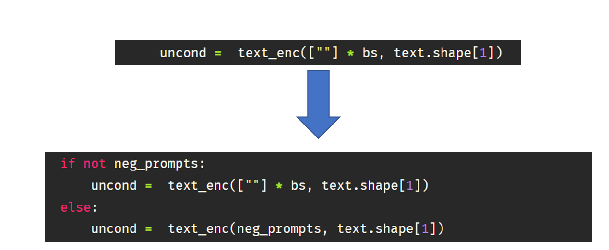

In previous posts, I went over all the key components of Stable Diffusion and how to get a prompt to image pipeline working. In this post, I will show how to edit the prompt to image function to add additional functionality to our Stable diffusion pipeline i.e., Negative prompting and Image to Image pipeline. Hopefully, this will provide enough motivation to play around with this function and conduct your research.
Fig. 1: A Stable diffusion generated image using prompt - “A road diverging in two different direction”
1 Variation 1: Negative Prompt
1.1 What is negative prompting?
A negative prompt is an additional capability we can add to our model to tell the stable diffusion model what we don’t want to see in the generated image. This feature is popular to remove anything a user doesn’t want to see from the original generated image.
Fig. 2: Negative prompt example
1.2 Understanding negative prompting through code
Let’s start by importing the required libraries and helper functions. All of this was already used and explained in the previous part 2 and part 3 of the series.
Code
import torch, logging## disable warningslogging.disable(logging.WARNING) ## Imaging libraryfrom PIL import Imagefrom torchvision import transforms as tfms## Basic librariesfrom fastdownload import FastDownloadimport numpy as npfrom tqdm.auto import tqdmimport matplotlib.pyplot as plt%matplotlib inlinefrom IPython.display import displayimport shutilimport os## For video displayfrom IPython.display import HTMLfrom base64 import b64encode## Import the CLIP artifacts from transformers import CLIPTextModel, CLIPTokenizerfrom diffusers import AutoencoderKL, UNet2DConditionModel, LMSDiscreteScheduler## Initiating tokenizer and encoder.tokenizer = CLIPTokenizer.from_pretrained("openai/clip-vit-large-patch14", torch_dtype=torch.float16)text_encoder = CLIPTextModel.from_pretrained("openai/clip-vit-large-patch14", torch_dtype=torch.float16).to("cuda")## Initiating the VAEvae = AutoencoderKL.from_pretrained("CompVis/stable-diffusion-v1-4", subfolder="vae", torch_dtype=torch.float16).to("cuda")## Initializing a scheduler and Setting number of sampling stepsscheduler = LMSDiscreteScheduler(beta_start=0.00085, beta_end=0.012, beta_schedule="scaled_linear", num_train_timesteps=1000)scheduler.set_timesteps(50)## Initializing the U-Net modelunet = UNet2DConditionModel.from_pretrained("CompVis/stable-diffusion-v1-4", subfolder="unet", torch_dtype=torch.float16).to("cuda")## Helper functionsdef load_image(p):''' Function to load images from a defined path '''return Image.open(p).convert('RGB').resize((512,512))def pil_to_latents(image):''' Function to convert image to latents ''' init_image = tfms.ToTensor()(image).unsqueeze(0) *2.0-1.0 init_image = init_image.to(device="cuda", dtype=torch.float16) init_latent_dist = vae.encode(init_image).latent_dist.sample() *0.18215return init_latent_distdef latents_to_pil(latents):''' Function to convert latents to images ''' latents = (1/0.18215) * latentswith torch.no_grad(): image = vae.decode(latents).sample image = (image /2+0.5).clamp(0, 1) image = image.detach().cpu().permute(0, 2, 3, 1).numpy() images = (image *255).round().astype("uint8") pil_images = [Image.fromarray(image) for image in images]return pil_imagesdef text_enc(prompts, maxlen=None):''' A function to take a texual promt and convert it into embeddings '''if maxlen isNone: maxlen = tokenizer.model_max_length inp = tokenizer(prompts, padding="max_length", max_length=maxlen, truncation=True, return_tensors="pt") return text_encoder(inp.input_ids.to("cuda"))[0].half()
Now we are going to change the prompt_2_img function from part 3 by passing an additional function neg_prompts. The way negative prompt works is by using user-specified text instead of an empty string for unconditional embedding(uncond) when doing sampling.

Fig. 3: Negative prompt code change
So let’s make this change and update our prompt_2_img function.
def prompt_2_img(prompts, neg_prompts=None, g=7.5, seed=100, steps=70, dim=512, save_int=False):""" Diffusion process to convert prompt to image """# Defining batch size bs =len(prompts) # Converting textual prompts to embedding text = text_enc(prompts) # Adding an unconditional prompt , helps in the generation processifnot neg_prompts: uncond = text_enc([""] * bs, text.shape[1])else: uncond = text_enc(neg_prompts, text.shape[1]) emb = torch.cat([uncond, text])# Setting the seedif seed: torch.manual_seed(seed)# Initiating random noise latents = torch.randn((bs, unet.in_channels, dim//8, dim//8))# Setting number of steps in scheduler scheduler.set_timesteps(steps)# Adding noise to the latents latents = latents.to("cuda").half() * scheduler.init_noise_sigma# Iterating through defined stepsfor i,ts inenumerate(tqdm(scheduler.timesteps)):# We need to scale the i/p latents to match the variance inp = scheduler.scale_model_input(torch.cat([latents] *2), ts)# Predicting noise residual using U-Netwith torch.no_grad(): u,t = unet(inp, ts, encoder_hidden_states=emb).sample.chunk(2)# Performing Guidance pred = u + g*(t-u)# Conditioning the latents latents = scheduler.step(pred, ts, latents).prev_sample# Saving intermediate imagesif save_int: ifnot os.path.exists(f'./steps'): os.mkdir(f'./steps') latents_to_pil(latents)[0].save(f'steps/{i:04}.jpeg')# Returning the latent representation to output an image of 3x512x512return latents_to_pil(latents)
Let’s see if the function works as intended.
## Image without neg promptimages = [None, None]images[0] = prompt_2_img(prompts = ["A dog wearing a white hat"], neg_prompts=[""],steps=50, save_int=False)[0]images[1] = prompt_2_img(prompts = ["A dog wearing a white hat"], neg_prompts=["White hat"],steps=50, save_int=False)[0]## Plotting side by sidefig, axs = plt.subplots(1, 2, figsize=(12, 6))for c, img inenumerate(images): axs[c].imshow(img)if c ==0 : axs[c].set_title(f"A dog wearing a white hat")else: axs[c].set_title(f"Neg prompt - white hat")
Fig. 4: Visualization of negative prompting. Left SD generated with prompt “A dog wearing a white hat” and on right the same caption with negative prompt of “White hat”
As we can see it can be a really handy feature to fine-tune the image to your liking. You can also use it to generate a pretty realistic face by being really descriptive as this Reddit post. Let’s try it -
prompt = ['Close-up photography of the face of a 30 years old man with brown eyes, (by Alyssa Monks:1.1), by Joseph Lorusso, by Lilia Alvarado, beautiful lighting, sharp focus, 8k, high res, (pores:0.1), (sweaty:0.8), Masterpiece, Nikon Z9, Award - winning photograph']neg_prompt = ['lowres, signs, memes, labels, text, food, text, error, mutant, cropped, worst quality, low quality, normal quality, jpeg artifacts, signature, watermark, username, blurry, made by children, caricature, ugly, boring, sketch, lacklustre, repetitive, cropped, (long neck), facebook, youtube, body horror, out of frame, mutilated, tiled, frame, border, porcelain skin, doll like, doll']images = prompt_2_img(prompts = prompt, neg_prompts=neg_prompt, steps=50, save_int=False)images[0]
Fig. 5: An image generated using negative prompting.
Pretty neat! I hope this gives you some ideas on how to get going with your own variations of stable diffusion. Now let’s look at another variation of Stable diffusion.
2 Variation 2: Image to Image pipeline
2.1 What is an image to image pipeline?
As seen above, prompt_2_img functions start generating an image from random gaussian noise, but what if we feed an initial seed image to guide the diffusion process? This is exactly how the image to image pipeline works. Instead of purely relying on text conditioning for the output image, we can use an initial seed image mix it with some noise (which can be guided by a strength parameter), and then run the diffusion loop.
Fig. 6: Image to image pipeline example.
2.2 Understanding image to image prompting through code
Now we are going to change the prompt_2_img function defined above. We will introduce two more parameters to our prompt_2_img_i2i function - 1. init_img: Which is going to be the Image object containing the seed image 2. strength: This parameter will take a value between 0 and 1. The higher the value less the final image is going to look similar to the seed image.
def prompt_2_img_i2i(prompts, init_img, neg_prompts=None, g=7.5, seed=100, strength =0.8, steps=50, dim=512, save_int=False):""" Diffusion process to convert prompt to image """# Converting textual prompts to embedding text = text_enc(prompt) # Adding an unconditional prompt , helps in the generation processifnot neg_prompts: uncond = text_enc([""], text.shape[1])else: uncond = text_enc(neg_prompt, text.shape[1]) emb = torch.cat([uncond, text])# Setting the seedif seed: torch.manual_seed(seed)# Setting number of steps in scheduler scheduler.set_timesteps(steps)# Convert the seed image to latent init_latents = pil_to_latents(init_img)# Figuring initial time step based on strength init_timestep =int(steps * strength) timesteps = scheduler.timesteps[-init_timestep] timesteps = torch.tensor([timesteps], device="cuda")# Adding noise to the latents noise = torch.randn(init_latents.shape, generator=None, device="cuda", dtype=init_latents.dtype) init_latents = scheduler.add_noise(init_latents, noise, timesteps) latents = init_latents# Computing the timestep to start the diffusion loop t_start =max(steps - init_timestep, 0) timesteps = scheduler.timesteps[t_start:].to("cuda")# Iterating through defined stepsfor i,ts inenumerate(tqdm(timesteps)):# We need to scale the i/p latents to match the variance inp = scheduler.scale_model_input(torch.cat([latents] *2), ts)# Predicting noise residual using U-Netwith torch.no_grad(): u,t = unet(inp, ts, encoder_hidden_states=emb).sample.chunk(2)# Performing Guidance pred = u + g*(t-u)# Conditioning the latents latents = scheduler.step(pred, ts, latents).prev_sample# Saving intermediate imagesif save_int: ifnot os.path.exists(f'./steps'): os.mkdir(f'./steps') latents_to_pil(latents)[0].save(f'steps/{i:04}.jpeg')# Returning the latent representation to output an image of 3x512x512return latents_to_pil(latents)
Instead of using random noise, you will notice we use the strength parameter to figure out how much noise to add and also the number of steps to run the diffusion loop for. The amount of noise is calculated by multiplying strength(default = 0.8) with steps (default = 50) which is the 10th (50 - 50 * 0.8) step and running the diffusion loop for 40(50*0.8) remaining steps. Let’s load an initial image and pass it through the prompt_2_img_i2i function.
p = FastDownload().download('https://s3.amazonaws.com/moonup/production/uploads/1664665907257-noauth.png')image = Image.open(p).convert('RGB').resize((512,512))prompt = ["Wolf howling at the moon, photorealistic 4K"]images = prompt_2_img_i2i(prompts = prompt, init_img = image)
/home/aayush/miniconda3/envs/fastai/lib/python3.9/site-packages/diffusers/schedulers/scheduling_lms_discrete.py:146: IntegrationWarning: The maximum number of subdivisions (50) has been achieved.
If increasing the limit yields no improvement it is advised to analyze
the integrand in order to determine the difficulties. If the position of a
local difficulty can be determined (singularity, discontinuity) one will
probably gain from splitting up the interval and calling the integrator
on the subranges. Perhaps a special-purpose integrator should be used.
integrated_coeff = integrate.quad(lms_derivative, self.sigmas[t], self.sigmas[t + 1], epsrel=1e-4)[0]
Code
## Plotting side by sidefig, axs = plt.subplots(1, 2, figsize=(12, 6))for c, img inenumerate([image, images[0]]): axs[c].imshow(img)if c ==0 : axs[c].set_title(f"Initial image")else: axs[c].set_title(f"Image 2 Image output")
Fig. 7: Visualization of image to image pipeline. Left is initial image passed in img2img pipeline and right is the output of the img2img pipeline.
We can see our prompt_2_img_i2i function creates a pretty epic image from the initial sketch provided.
3 Conclusion
I hope this gives a good overview of how to tweak the prompt_2_img function to add additional capabilities to your stable diffusion loop. The understanding of this lower-level function is useful for trying your own idea to improve stable diffusion or implement new papers which I might cover in my next post.
I hope you enjoyed reading it, and feel free to use my code and try it out for generating your images. Also, if there is any feedback on the code or just the blog post, feel free to reach out on LinkedIn or email me at aayushmnit@gmail.com.